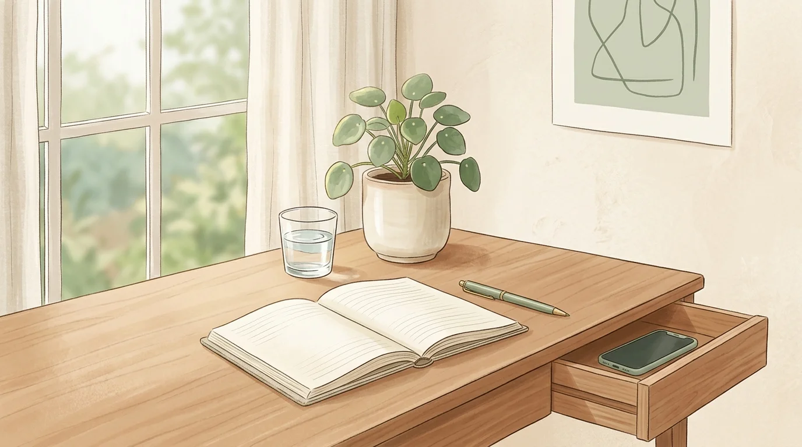
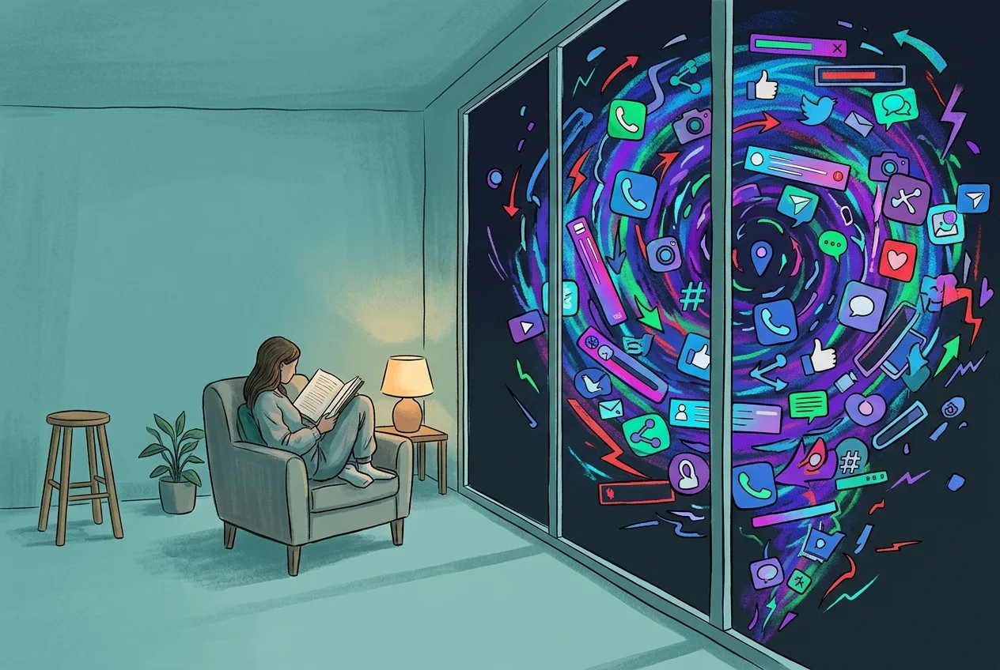
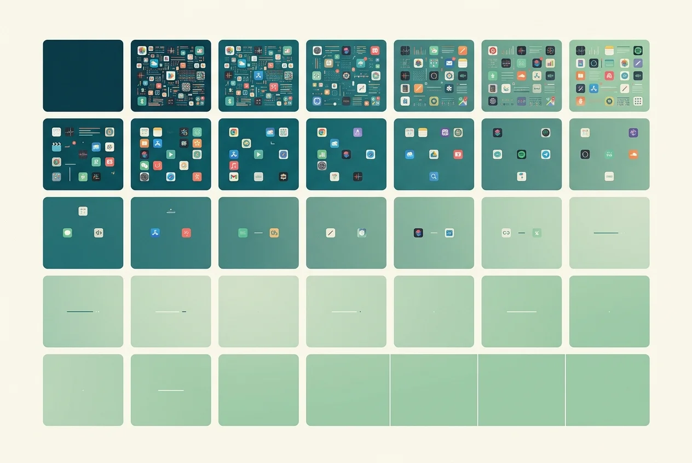

Digital Minimalism: A Practical Guide for the Extremely Online
You don't have to delete everything and move to a cabin. Here's how to use technology on your terms—without losing the parts that actually matter to you.

It's 11:47 PM. Your eyes are dry. There's a faint tension behind your temples that you've been half-aware of for the last two hours but kept ignoring. You were supposed to be asleep by ten. You open your phone to set an alarm and, forty minutes later, you're watching a video about someone's apartment makeover in a city you've never been to, posted by a person you've never met, and you're not even enjoying it. You're just... consuming. On autopilot. Your thumb doing the thing it always does.
You close the app. You feel a specific kind of hollow. Not guilty, exactly—more like robbed. Of time, of energy, of the version of tonight you'd planned.
This is what living extremely online feels like from the inside. It has a name—doomscrolling—and it's why the idea of digital minimalism keeps pulling you back.
Digital minimalism is a philosophy of technology use where you focus your online time on a small number of carefully selected activities that strongly support things you value—and happily miss out on everything else. It's not about deleting every app or going off-grid. It's about designing your relationship with technology so that you're steering, not being steered.
What Digital Minimalism Actually Is (And Isn't)
Digital minimalism is not a tech-free life. It's not deleting Instagram and going back to a flip phone. It's not a 30-day social media fast that you abandon on day four because you need to send a birthday message and suddenly you're back in the feed for ninety minutes.
The concept, popularized by Georgetown computer science professor Cal Newport in his 2019 book of the same name, has a precise definition: a philosophy of technology use in which you focus your online time on a small number of carefully selected and optimized activities that strongly support things you value, and then happily miss out on everything else.
Read that again slowly. The key words are carefully selected and strongly support things you value.
Digital minimalism is not about using less technology for the sake of it. It's about using the right technology for the right reasons—and eliminating the ambient, mindless, algorithmic consumption that serves no one's values except the platform's bottom line. The difference between those two things is enormous. One is aesthetic asceticism. The other is a radical act of cognitive sovereignty.
Why "Extremely Online" Feels So Exhausting

To understand why digital minimalism works, you first need to understand why the default relationship with technology depletes you.
Your brain has what neuroscientists call a negativity bias—an evolutionary tendency to weight negative information more heavily than positive information. In the Pleistocene, this kept you alive. A rustle in the bushes that turned out to be nothing cost you nothing. A rustle in the bushes that turned out to be a predator cost you everything. So your brain learned to pay disproportionate attention to threats. That wiring still runs in your nervous system today.
Social media platforms discovered this bias before most of us knew it existed. Research published in PNAS confirms that outrage keeps people scrolling longer than delight. Fear generates more clicks than joy. So the feed is tuned—by thousands of engineers, optimized over billions of data points—to serve you a steady drip of content that activates your threat-detection system. Not enough to make you close the app. Just enough to keep you swiping.
There's also the dopaminergic loop. Every notification, every like, every new post is an unpredictable reward. Variable ratio reinforcement—the same mechanism that makes slot machines so addictive—fires every time you pull the feed. Your nucleus accumbens lights up in anticipation, not satisfaction. The wanting is always greater than the getting. So you keep going.
The exhaustion you feel after two hours of scrolling isn't a mystery. You've spent two hours in a state of low-grade neurological arousal, processing dozens of micro-threats, receiving dozens of tiny dopamine anticipation signals, and getting very little actual satisfaction in return. Your nervous system is tired. Your prefrontal cortex—the part responsible for planning, focus, and emotional regulation—has been steadily deprioritized while your limbic system ran the show.
This is not a willpower problem. This is an architectural mismatch.
The Core Philosophy: Intention Before Access
Digital minimalism runs on a single operating principle: you should never be in a passive, reactive relationship with any piece of technology you use. You decide what you want from it. You decide when you access it. You decide when you stop.
The platforms are designed for the opposite dynamic. They want you reactive—bored and impulsive enough to open the app without a specific purpose, and then hooked once you're inside. The entire UX architecture of every major social platform is engineered to eliminate the pause between impulse and action. That pause is the thing digital minimalism is trying to restore.
Newport calls this "solitude and slow information." The idea is that a mind that never gets to sit quietly—that's constantly filling every spare moment with a feed—loses the ability to do the kind of slow, integrative thinking that generates insight, emotional clarity, and genuine satisfaction. You can't think your way through a hard problem while simultaneously watching reaction videos. You can't process grief, or excitement, or creative ideas while your attention is fragmented across seventeen apps.
You need empty space. Digital minimalism protects that space on purpose, rather than hoping it survives by accident.
The Digital Declutter: The 30-Day Reset

Newport's practical starting point is a 30-day digital declutter. The rules are simple but non-negotiable in their original form: for 30 days, you eliminate all optional technologies from your life. Not forever. Just for 30 days.
"Optional" has a specific meaning here. It means any technology you use for leisure or entertainment that isn't strictly required for work or basic communication. Social media is optional. Netflix binge-watching is optional. News websites where you check for three minutes and stay for an hour are optional. Video games are optional. The rule is not about productivity—it's about reclaiming the space that passive consumption has colonized.
During those 30 days, you do three things:
First, you notice what actually fills the void. When scrolling isn't an option, what do you reach for? What activities make time feel well-spent? What conversations are you suddenly having that used to get drowned out by the noise? This data is more honest than any self-report because it reflects your actual values, not your stated ones.
Second, you rediscover analog leisure. Newport is insistent about this: passive digital consumption is so neurologically stimulating that anything less stimulating—reading, walking, cooking, building something with your hands—initially feels boring. That boredom is withdrawal, not evidence that analog leisure is actually boring. Push through it. The ability to enjoy low-stimulation activities is something your brain can rebuild, but it takes a few weeks.
Third, you prepare for intentional reintroduction. Not a return to the default. An intentional, designed relationship with the technologies you actually need.
Reintroducing Technology on Your Terms
After 30 days, you don't just go back to everything you eliminated. You reintroduce selectively, with rules that match your actual values.
The question Newport asks is: Does this technology directly support something I deeply value? Not "do I sometimes use this for something valuable?" but directly supports. Instagram might occasionally surface an inspiring piece of art, but if you're honest, you spend 90% of your time in it doing something else entirely. That ratio matters.
For each technology you consider reintroducing, you define the how and the when. Not just "I'll use Instagram less"—that's a resolution, and resolutions don't work because they require constant willpower expenditure. You define specific operating procedures. Maybe Instagram is permitted on Sundays between 7 and 8 PM, accessed only from a laptop browser, with notifications off. Maybe Twitter is permitted only after 5 PM on weekdays. Maybe TikTok gets a strict 20-minute session per day, triggered only after you've completed the thing you actually wanted to do first.
These are not restrictions. They are architectural decisions. The difference is that a restriction fights your impulses; an architectural decision removes the opportunity for the impulse to act. When the app is not installed, when the browser tab is closed, when the session is time-boxed, you aren't exercising willpower—you've simply removed the path of least resistance.
Digital Minimalism Without the Purity Test
The internet loves to make digital minimalism into an identity performance. The person who logs off completely and writes a Medium post about it. The productivity influencer who deleted all their apps and gained "clarity." The implicit message is that more is better, and the truest digital minimalist is the one who uses the least.
That's a misreading of the philosophy, and it's why so many people try it and fail. You are not trying to become a different kind of person with a different set of values. You're trying to make the technology in your life actually serve the values you already have.
If you genuinely love following a community of woodworkers on YouTube, that usage can survive a digital minimalism audit—as long as you're watching intentionally, not because the autoplay queue dropped you there after you came to watch one video. If you use Twitter to stay connected with colleagues in your industry and it delivers real professional value, you don't have to delete it. You just have to use it in a way that you're steering, not being steered.
The goal is not silence. The goal is signal.
Practical Rules That Actually Hold
Theory is cheap. Here are the habits that research and practice consistently show are effective for sustaining a digital minimalist lifestyle long-term.
Keep your phone out of your bedroom. The bedroom should not be the first and last thing your nervous system interacts with every day. A cheap alarm clock costs eight dollars. Your sleep architecture and morning cortisol levels are worth considerably more than eight dollars.
No phones during meals. Not as a rule for other people—as a rule for yourself. Mealtime is one of the few natural pause points left in a hyperconnected day. Protect it.
Batch your communication. Checking email and messages in three dedicated windows per day—morning, midday, late afternoon—is functionally equivalent to checking constantly, in terms of actual responsiveness, for almost all non-emergency communications. What it eliminates is the cognitive cost of constant context-switching. That cost is enormous. Research from the University of California, Irvine found it takes an average of 23 minutes and 15 seconds to return to a task after an interruption. Batch your communication and you get those 23-minute blocks back.
Install friction, not just limits. Raw time limits set by screen time apps have a high failure rate because they rely on willpower at exactly the moment when your resistance is lowest—when you're bored, tired, or anxious, and the app is right there, one tap away. Effective digital minimalism uses architectural friction instead. Move apps to a back screen. Delete social apps from your phone entirely and access them only on a laptop. Or use one of the best app blockers for iPhone that introduces a deliberate action before granting access.
Fill the void deliberately. The single biggest reason digital minimalism attempts fail in the long run is that people eliminate consumption without replacing it with something. Your brain will seek stimulation; that's not a flaw, it's biology. The question is what you feed it. If your evenings are genuinely enjoyable—reading fiction, having real conversations, cooking something interesting, pursuing a craft—the pull of the feed weakens organically. Not because you've conquered it. Because you've given your nervous system something better to do.
The Role of Friction: Why Philosophy Alone Isn't Enough
Here's the part most digital minimalism guides skip. Philosophy is necessary but not sufficient. You can completely agree with everything above and still find yourself three hours deep in a feed at midnight, because the impulse to scroll precedes conscious thought. Your thumb moves before your brain has a chance to consult your values.
This is where architectural tools become essential. Not as a crutch, but as the infrastructure that makes your intentions durable. You cannot rely on in-the-moment willpower to defend a philosophy against platforms that have spent billions of dollars undermining that exact faculty.
Sip & Scroll was built precisely for this gap—the space between your intentions and the impulsive tap. Rather than hard-blocking the apps you love (which tends to feel punitive and gets bypassed or deleted), it inserts a small, meaningful pause: before you open TikTok, Instagram, or whatever your particular vortex is, you're prompted to take a sip of water and snap a quick selfie proving it. That's the friction. It's not a wall—it's a speed bump. Just enough to interrupt the automatic behavior and give your prefrontal cortex time to come online and ask whether this is how you actually want to spend the next thirty minutes. After the sip, you get up to thirty unblocked minutes. Another sip if you want another session. The ritual is the point.
It transforms a mindless reflex into a conscious choice. And in the attention economy, the ability to make a conscious choice before you consume is worth more than any productivity framework you could adopt.
The Longer Game
Digital minimalism is not a sprint. The 30-day declutter is a starting point, not the destination. The destination is a durable, designed relationship with technology that you actually maintain over years—not a productivity experiment that lasts until the first stressful week.
The people who sustain it long-term tend to share a few things in common. They've built genuinely rich offline lives that they're not willing to sacrifice for a feed. They've replaced the social functions that apps provide—connection, community, entertainment—with higher-quality versions of the same things. And they've designed their technological environment so that the default behavior is minimal, and access to distracting content requires deliberate effort.
They're not fighting the algorithm every day. They've made the architecture do the fighting for them.
You cannot out-willpower an algorithm designed by thousands of engineers to mine your attention. Peace of mind in the attention economy requires hard architectural boundaries—making the right choice the easy choice, and the mindless choice the effortful one. That is exactly the shift digital minimalism asks you to make. And it's the shift that, once you've made it, you'll wonder how you lived without.
Build the friction that makes your intentions stick.
Sip & Scroll adds a gentle pause before your most addictive apps. A sip of water, a selfie, then 45 minutes of intentional access—on your terms.
Download Sip & Scroll — Free